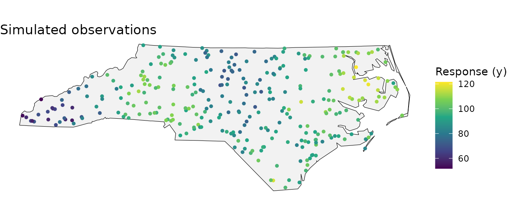
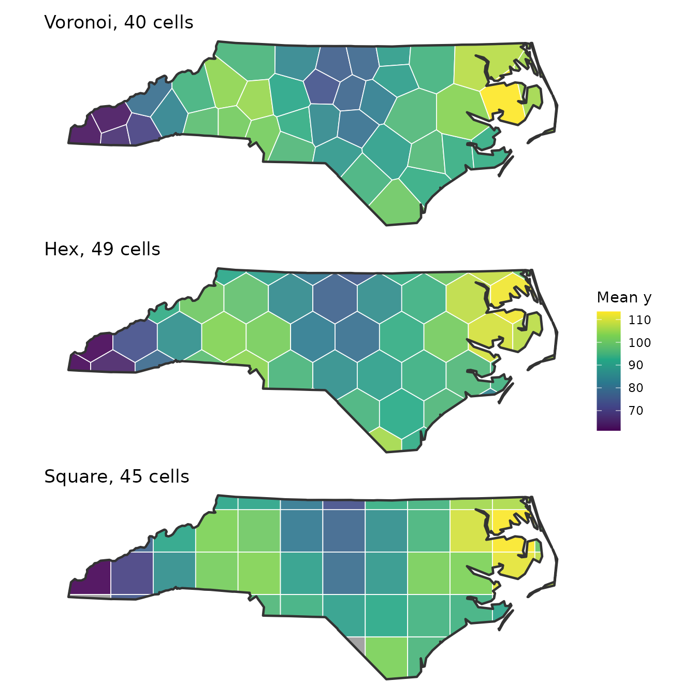
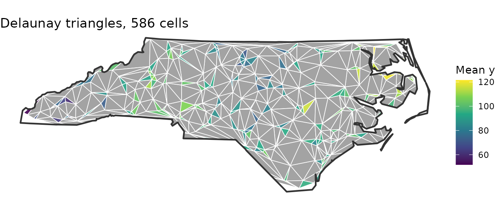
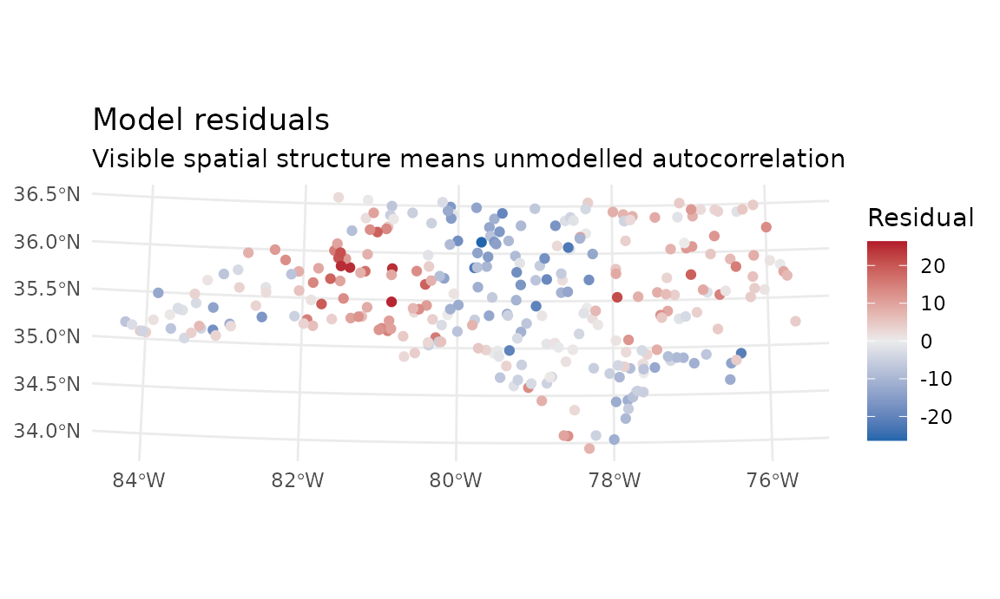
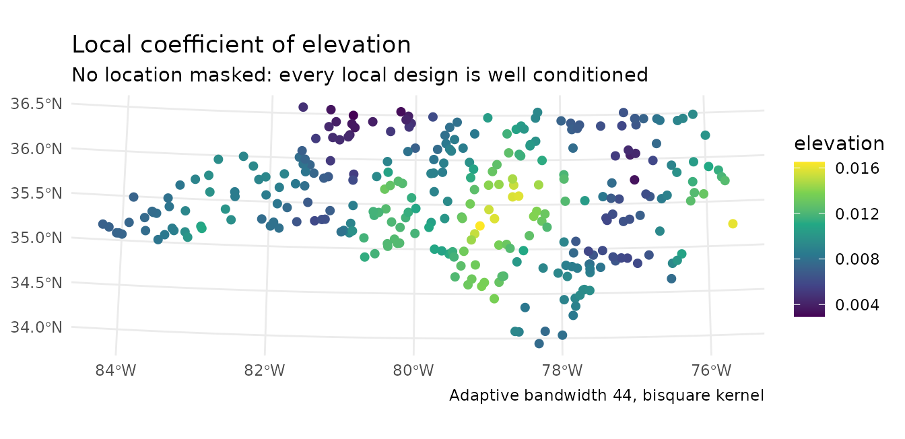
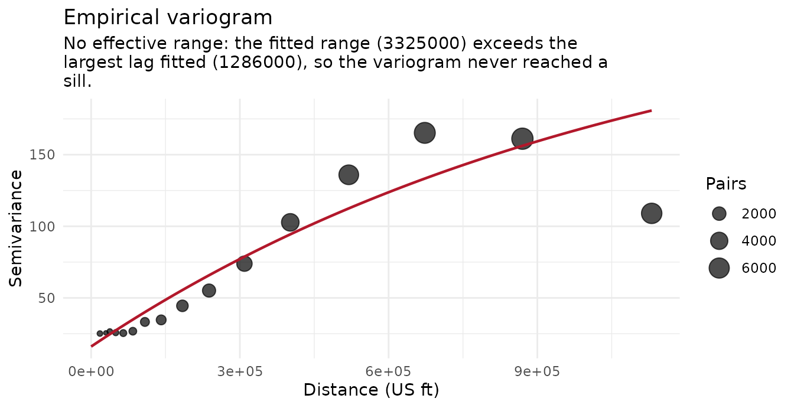
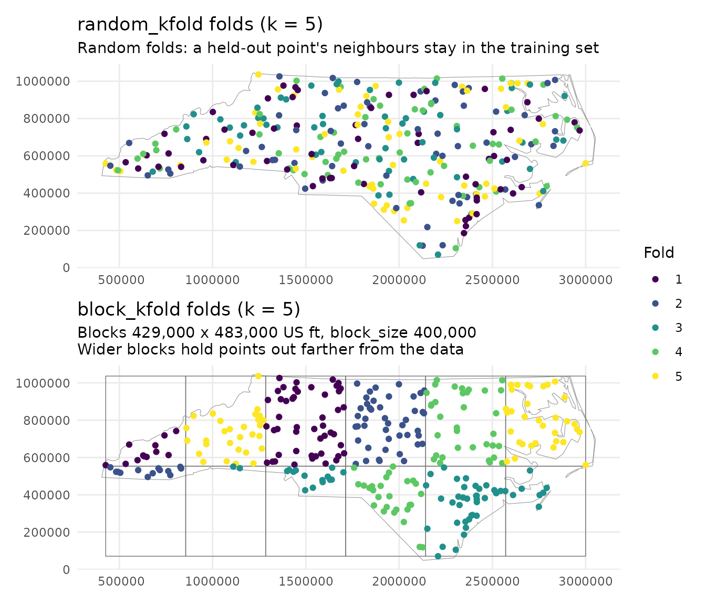
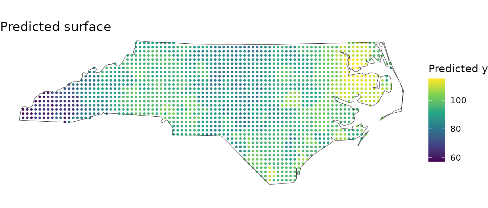

Worked example: North Carolina
Justin Chase
Source:vignettes/spatialkit_nc_demo.Rmd
spatialkit_nc_demo.RmdThis article runs the pipeline on a simulated field over North
Carolina, where the structure the cells and models should find is known,
and compares four tessellations, two fold schemes and two backends on
it. vignette("getting-started") takes the short path
through the same steps. The state outline comes from the
nc.shp file bundled with sf, so the article
needs no other files.
This article needs six optional packages: ggplot2
for the figures, patchwork for the stacked panels,
geometry for the Delaunay triangles, ranger
for the random forest, sp for GWR and gstat
for the variogram. Where one is missing, the code that needs it is shown
but not run.
The state outline, in feet
The chunk below dissolves the county boundaries shipped with
sf into one state outline and projects it to NAD83 / North
Carolina (ftUS), EPSG:2264, so that distances are planar. Every distance
and block size below is therefore in US survey feet, not metres (the GWR
bandwidth is a count of neighbours). Projected does not mean metric: the
unit is the one the CRS names.
nc_counties <- st_read(system.file("shape/nc.shp", package = "sf"), quiet = TRUE)
nc_boundary <- nc_counties |>
st_union() |>
st_transform(2264) |>
st_as_sf()A simulated field with known structure
Three hundred points inside the outline carry two predictors and a response:
-
elevationrises from west to east, plus noise. -
pop_densitydecays with the distance from two invented cities. -
yis the sum of the two predictors’ effects, a spatial field that neither predictor carries, and noise. The field is structure that nearby observations share, so a model’s error depends on how far from the data it predicts.
n_points <- 300
pts_raw <- st_sample(nc_boundary, size = n_points, type = "random")
pts_coords <- st_coordinates(pts_raw)
x_coords <- pts_coords[, 1]
y_coords <- pts_coords[, 2]
elevation <- scale(x_coords)[, 1] * 500 + rnorm(n_points, 3000, 400)
city1 <- c(1530000, 550000) # near Charlotte in EPSG:2264
city2 <- c(2150000, 750000) # near Raleigh
dist_to_city <- pmin(
sqrt((x_coords - city1[1])^2 + (y_coords - city1[2])^2),
sqrt((x_coords - city2[1])^2 + (y_coords - city2[2])^2)
)
pop_density <- pmax(exp(-dist_to_city / 400000) * 5000 + rnorm(n_points, 200, 100), 10)
spatial_field <- 20 * sin(x_coords / 250000) * cos(y_coords / 250000)
y_response <- 50 +
0.01 * elevation +
0.005 * pop_density +
spatial_field +
rnorm(n_points, 0, 5)
points_sf <- st_sf(
y = y_response,
elevation = elevation,
pop_density = pop_density,
geometry = pts_raw
)
ggplot() +
geom_sf(data = nc_boundary, fill = "grey95", colour = "black") +
geom_sf(data = points_sf, aes(colour = y), size = 1.1) +
scale_colour_viridis_c(name = "Response (y)") +
theme_void() +
ggtitle("Simulated observations")
Four tessellations
build_tessellation() builds four kinds of cell from the
same points and outline; vignette("cells") says which kind
suits which purpose. The counts are set by hand, 40 seeds for the
Voronoi cells and about 50 cells for each grid, so that the methods are
compared at similar numbers of cells.
vignette("resolution") shows how to choose the count from
the data.
Voronoi cells from 40 density-weighted k-means seeds
Voronoi cells grow around seed points, not around the observations.
One cell per observation would give 300 cells of one point each: a
nearest-neighbour interpolation rather than an aggregation, with no
spread inside a cell to compute a standard error from.
get_voronoi_seeds() clusters the observations first, each
weighted by its local density, so cells are small where the observations
are dense.
seeds <- get_voronoi_seeds(
boundary = nc_boundary,
sample_points = points_sf,
method = "kmeans",
n = 40
)
tess_voronoi <- build_tessellation(
seeds, boundary = nc_boundary,
method = "voronoi", clip = TRUE, quiet = TRUE
)
outside <- lengths(st_intersects(seeds, nc_boundary)) == 0
sum(outside) # seeds that lie outside the state outline## [1] 1
tess_voronoi$index[outside] # the cell each of them generates## [1] 38A k-means centre is a mean of observations, so it can lie outside an
outline that is not convex. Here 1 of the 40 centres lies just outside
the state outline, over a sound that coastal observations surround. Its
cell, the part of the state nearer to it than to any other seed, is
still built inside the outline. For seeds,
tess_voronoi$index holds the cell_id each seed
generates, including this one.
Hex and square grids of about 50 cells
tess_hex <- build_tessellation(
points_sf, boundary = nc_boundary,
method = "hex", approx_n_cells = 50, clip = TRUE, quiet = TRUE
)
tess_square <- build_tessellation(
points_sf, boundary = nc_boundary,
method = "square", approx_n_cells = 50, clip = TRUE, quiet = TRUE
)All four methods return cells with a cell_id column; the
grid methods keep poly_id beside it, holding the same
values.
names(tess_hex$cells)## [1] "poly_id" "geometry" "cell_id"Delaunay triangles
method = "triangles" uses
geometry::delaunayn() when geometry is
installed, and otherwise falls back to sf::st_triangulate()
with a logged warning. Both give the Delaunay triangulation of the
points; they can split degenerate (co-circular) configurations
differently.
tess_tri <- build_tessellation(
points_sf, boundary = nc_boundary,
method = "triangles", clip = TRUE, quiet = TRUE
)
tri_assigned <- assign_features_to_polygons(points_sf, tess_tri$cells,
polygon_id_col = "cell_id")
c(triangles = nrow(tess_tri$cells),
with_points = length(unique(na.omit(tri_assigned$cell_id))))## triangles with_points
## 586 189The corners of the triangles are the observations themselves, so each
observation falls in one of the triangles that meet at it, and most
triangles hold none: 189 of 586 hold a point here.
?build_tessellation describes triangles as useful for
interpolation and adjacency work, not as an aggregation unit.
The number of cells each method built:
sapply(list(Voronoi = tess_voronoi, Hex = tess_hex, Square = tess_square,
Triangles = tess_tri),
function(tess) nrow(tess$cells))## Voronoi Hex Square Triangles
## 40 49 45 586Cell means and their standard errors
assign_features_to_polygons() puts each point in a cell,
and summarize_by_cell() reduces the points to one row per
cell. Each row holds the count n; the mean, standard
deviation and standard error of the response and of every predictor; a
cell_weight; and beside each mean a pooled value, the
cell’s mean pulled toward the mean of the observations in the 8 nearest
cells (nearest by the centroid of their observations).
vignette("cells") explains pooled values and when to report
one.
assigned <- assign_features_to_polygons(points_sf, tess_voronoi$cells,
polygon_id_col = "cell_id")
cell_stats <- summarize_by_cell(
assigned,
response_var = "y",
predictor_vars = c("elevation", "pop_density"),
id_col = "cell_id"
)
head(as.data.frame(cell_stats)[, c("cell_id", "n", "resp_mean_y", "..se_resp_y",
"..pooled_resp_y")])## cell_id n resp_mean_y ..se_resp_y ..pooled_resp_y
## 1 1 6 62.89141 2.888004 65.90426
## 2 2 7 63.36230 2.840840 66.32647
## 3 3 5 67.11282 3.810849 69.71523
## 4 4 5 70.34951 5.557886 72.31561
## 5 5 5 79.61205 2.382507 80.23328
## 6 6 4 84.14516 3.943018 84.77772The ..se_* columns are standard errors at the default
deff = 1, which treats the points in a cell as independent.
That is the standard error of each cell’s own mean, the value a map of
the cells shows, when the points are spread through the cell. As a
standard error for the population mean it is anticonservative when
points inside a cell are spatially correlated, and
deff = "kish" widens it by a design effect estimated from
that correlation; vignette("cells") explains the design
effect.
cell_kish <- summarize_by_cell(
assigned,
response_var = "y",
predictor_vars = c("elevation", "pop_density"),
id_col = "cell_id",
deff = "kish"
)
deff <- attr(cell_kish, "deff_applied")
cat(sprintf("method = %s | ICC(response) = %.3f | median design effect = %.2f\n",
deff$method, deff$icc_resp, stats::median(deff$deff, na.rm = TRUE)))## method = kish | ICC(response) = 0.737 | median design effect = 5.42
# How much the Kish standard error of the response exceeds the default one.
inflation <- cell_kish$`..se_resp_y` / cell_stats$`..se_resp_y`
summary(inflation)## Min. 1st Qu. Median Mean 3rd Qu. Max.
## 3.067 4.220 4.540 4.624 5.120 6.973The Kish standard error is a median 4.54 times the default one, more
than the 2.33 that the square root of the median design effect gives,
because an estimated design effect also corrects the within-cell
standard deviation (vignette("cells"), “Standard errors and
the design effect”).
Maps of the cell means
summarize_by_cell(cells_sf = ) returns the summary on
the cells themselves, ready for plot_tessellation_map().
The two helpers below summarise a tessellation onto its cells and map
the mean of y:
# The cell summary of y on the cells of one tessellation.
on_cells <- function(tess) {
assigned <- assign_features_to_polygons(points_sf, tess$cells,
polygon_id_col = "cell_id")
summarize_by_cell(assigned, response_var = "y", id_col = "cell_id",
cells_sf = tess$cells)
}
# A map of the cell means, on a colour scale with the given limits.
map_means <- function(cells, label, limits = NULL) {
plot_tessellation_map(
tessellation_sf = cells,
boundary = nc_boundary,
fill_col = "resp_mean_y",
outline_col = "white",
outline_size = 0.3,
boundary_col = "grey20",
boundary_size = 0.8,
title = sprintf("%s, %d cells", label, nrow(cells))
) +
scale_fill_viridis_c(name = "Mean y", limits = limits, na.value = "grey60")
}The three maps below share one colour scale: its limits span all
three sets of cell means, and patchwork collects the three
legends into one, so a colour means the same value on every map. Grey
cells hold no observation.
library(patchwork)
means <- lapply(list(Voronoi = tess_voronoi, Hex = tess_hex, Square = tess_square),
on_cells)
lims <- range(unlist(lapply(means, `[[`, "resp_mean_y")), na.rm = TRUE)
(map_means(means$Voronoi, "Voronoi", lims) /
map_means(means$Hex, "Hex", lims) /
map_means(means$Square, "Square", lims)) +
plot_layout(guides = "collect")
The triangle map, on its own colour scale:
map_means(on_cells(tess_tri), "Delaunay triangles")
Models fitted on the points
The models below are fitted on the 300 points, not on the cell means;
vignette("getting-started") says when to fit on cells
instead. The cells can still serve as cross-validation blocks:
make_folds(points_sf, k = 5, method = "block_kfold", blocks = tess_voronoi$cells)
holds out whole Voronoi cells.
A random forest and its residuals
fit_rf_model() and cv_rf() need
ranger.
rf_fit <- fit_rf_model(points_sf, response_var = "y",
predictor_vars = c("elevation", "pop_density"))
rf_fit## <Random Forest (ranger)> spatial model fit
## Formula : y ~ elevation + pop_density
## n : 300
## CRS : EPSG:2264
## Trees : 500 (mtry = 1, min node = 5)
## Coords as predictors: no - no spatial information used; see ?fit_rf_model
## Sampling: bootstrap, with replacement (100.0% of rows per tree)
## OOB RMSE: 9.7284 OOB R^2: 0.4733
## Importance (permutation): elevation=105.4, pop_density=83.25
##
## OOB is a random hold-out: under spatial autocorrelation it is the error
## of predicting among the samples, and reads low for predictions made
## farther from the data than the samples sit from each other. Score a map
## that predicts farther with cv_rf() on folds at its distances
## (?fold_separation).summary.spatial_fit() on an rf_fit reports
out-of-bag metrics, not in-sample ones: fitted.rf_fit()
returns out-of-bag predictions, and the printout says so. A
gwr_fit or bayesian_fit reports in-sample
metrics, so the two are not comparable; scores from the same folds are,
as the comparison of backends below shows.
summary(rf_fit)## Summary of <rf_fit> fit (n = 300)
##
## Formula: y ~ elevation + pop_density
##
## Out-of-bag metrics (NOT in-sample; see ?fit_rf_model):
## RMSE = 9.7284
## MAE = 7.8448
## R^2 = 0.4715
## SMAPE = 8.65%
rf_fit$info$importance # coef() on an rf_fit errors: a forest has no coefficients## elevation pop_density
## 105.35583 83.25089The two printouts give different R² (0.4733 above, 0.4715 here) and
the same RMSE. Both read the same out-of-bag predictions.
print.rf_fit() echoes the R² that ranger
reports, which compares the out-of-bag mean squared error with the
variance of y computed with denominator n − 1;
summary.spatial_fit() uses denominator n. Their unexplained
fractions therefore differ by the factor n / (n − 1), here 300 /
299.
plot.spatial_fit() draws the residuals on a map by
default (type = "residuals");
"observed_predicted", "variogram" and, for a
GWR fit, "coefficients" are the other views. Structure in
the residual map is spatial autocorrelation the model has not captured,
and residual_morans_i() puts a number on it.
plot(rf_fit, type = "residuals")
mi <- residual_morans_i(rf_fit)
cat(sprintf("Moran's I = %.4f (z = %.2f, p = %.3g)\n",
mi$observed, mi$z, mi$p_value))## Moran's I = 0.5443 (z = 20.12, p = 4.58e-90)The residuals are autocorrelated (Moran’s I = 0.54, z = 20.1): the
forest has not captured the spatial field added to y, which
neither predictor carries. The section on spatial folds measures what
that does to a cross-validated score.
A GWR fit, if sp is installed
gwr_fit <- fit_gwr_model(
data_sf = points_sf,
response_var = "y",
predictor_vars = c("elevation", "pop_density"),
adaptive = TRUE,
kernel = "bisquare"
)
gwr_met <- model_metrics(gwr_fit)
# adaptive = TRUE: the bandwidth is a number of nearest neighbours, not feet.
cat(sprintf("Bandwidth: %.0f neighbours | in-sample R2: %.3f | RMSE: %.3f\n",
gwr_fit$info$bandwidth, gwr_met$R2, gwr_met$RMSE))## Bandwidth: 44 neighbours | in-sample R2: 0.877 | RMSE: 4.701GWR fits one weighted regression at each location, so each
coefficient has a value at every point.
type = "coefficients" maps one of them:
plot(gwr_fit, type = "coefficients", term = "elevation")
The simulation gives elevation the same effect, 0.01, everywhere, so the spread on the map is not variation in the true effect.
In 25 of the 300 windows the local intercept is poorly determined:
the condition index that includes the intercept (cn in
gwr_fit$info$local_collinearity, see
?fit_gwr_model) is above 30. The cause is
elevation, which averages about 3,000 but inside a window
of 44 neighbours varies by little more than the noise the simulation
added (standard deviation 400), so locally it is nearly collinear with
the intercept. The slopes are well determined: their index
(cn_slopes), which centres the predictors in each window,
is at most 4.5, so the fit does not warn, and the elevation map above
masks no location. With term = "Intercept" the same map
draws the poorly determined intercepts hollow. Centring the predictor
(elevation - mean(elevation)) gives the same bandwidth and
fitted values and determines the intercepts too.
Scoring the model on spatial folds
A random fold leaves each held-out point’s neighbours in the training data; a blocked fold holds out whole blocks of the state. With residuals as autocorrelated as the forest’s, the two schemes can give different scores; the runs below measure the difference on these data.
The autocorrelation range
estimate_sac_range() fits a variogram to the residuals
of y on the predictors and returns the autocorrelation range of
the residuals in CRS units, here US survey feet. It returns
NA when the variogram never levels off within the distances
it was fitted over, because a range it cannot identify must not size the
blocks. ?estimate_sac_range covers the directional fits and
anisotropy.
sac <- estimate_sac_range(points_sf, response_var = "y",
predictor_vars = c("elevation", "pop_density"))
as.numeric(sac)## [1] NA
attr(sac, "rejected_reason")## [1] "fitted range exceeds the largest lag fitted"plot.sac_range() draws the empirical variogram with the
fitted model, so you can judge the fit; when no range was identified,
the subtitle says why. Here the fitted curve is still rising at the
largest distance it was fitted over.
plot(sac)
Random folds and blocks
No range was identified, so the block size here comes from the
simulation instead. The field changes sign about every 785,000 ft (π ×
250,000), and 400,000 ft is about half that, the distance from a zero of
the wave to its peak. On your own data, where the field is unknown,
cv_block_size_sweep() gives the cross-validated error at
each block size (vignette("spatial-cross-validation")).
folds_random <- make_folds(points_sf, k = 5, method = "random_kfold", seed = 42)
folds_blocked <- make_folds(points_sf, k = 5, method = "block_kfold",
block_size = 400000, seed = 42)
c(random = folds_random$k, blocked = folds_blocked$k,
blocks = folds_blocked$params$blocks_used)## random blocked blocks
## 5 5 12plot_folds() shows whether the blocks separate the data,
and how wide they are:
library(patchwork)
(plot_folds(folds_random, points_sf, boundary = nc_boundary) /
plot_folds(folds_blocked, points_sf, boundary = nc_boundary)) +
plot_layout(guides = "collect")
The score under each scheme
include_coords = TRUE gives the forest the coordinates,
which lets it fit the training surface by location, so its error grows
quickly with the distance from the data. Scoring it with the same
predictors and settings on both fold schemes shows how much:
cv_random <- cv_rf(points_sf, "y", c("elevation", "pop_density"),
folds = folds_random, include_coords = TRUE,
num_trees = 300, seed = 1)
cv_blocked <- cv_rf(points_sf, "y", c("elevation", "pop_density"),
folds = folds_blocked, include_coords = TRUE,
num_trees = 300, seed = 1)
data.frame(
folds = c("random_kfold", "block_kfold"),
R2 = c(cv_random$overall$R2, cv_blocked$overall$R2),
RMSE = c(cv_random$overall$RMSE, cv_blocked$overall$RMSE)
)## folds R2 RMSE
## 1 random_kfold 0.7945102 6.090085
## 2 block_kfold 0.6313066 8.994703Random folds report R² = 0.795; blocked folds report 0.631 with the same predictors and settings, a drop of 21 percent of the reported skill.
Which of the two to report depends on where the map will predict. The
random score is the error of predicting among the points you have; the
blocked one is the error of predicting whole blocks of the state from
the rest. The surface mapped at the end of this article covers the state
these points were sampled across at random.
fold_separation() compares the distances from such a map’s
locations to the data with the held-out distances of each scheme. Here
map_pts, a regular sample of the state, stands in for that
map’s grid:
map_pts <- st_sample(nc_boundary, size = 2000, type = "regular")
reading <- c(
random = attr(fold_separation(folds_random, points_sf,
prediction_points = map_pts), "target")$reading,
blocked = attr(fold_separation(folds_blocked, points_sf,
prediction_points = map_pts), "target")$reading)
reading## random blocked
## "matched" "farther""matched" says the held-out points sit about as far from
their training data as the map’s locations sit from the data;
"farther" says they sit farther, so that score tends to
read high for this map. The reading compares nearest-neighbour distances
and does not measure a bias. ?fold_separation lists all
four readings, and vignette("spatial-cross-validation")
explains them. For a map of an area the points never sampled, the
blocked score would be the closer match.
The comparison of backends below and the area of applicability of the
surface use the random folds, the scheme fold_separation()
reads as matched for this map.
Two backends on the same folds
compare_models_cv() cross-validates each requested
backend on the folds you pass, so their scores are
comparable. A backend whose package is missing is dropped with a
message, and the call returns the backends that could run.
cmp <- compare_models_cv(
points_sf, "y", c("elevation", "pop_density"),
models = c("RF", "GWR"),
folds = folds_random,
rf_args = list(num_trees = 300)
)
cmp$overall[, c("model", "RMSE", "MAE", "R2")]## model RMSE MAE R2
## 1 GWR 5.591604 4.454352 0.8267726
## 2 RF 9.823995 7.859748 0.4652879The RF row is the forest on the two predictors alone; on the same random folds the forest with coordinates scored R² = 0.795. The field is a smooth wave that neither predictor carries, and a forest given the coordinates can fit it by location.
A surface, and where it applies
predict_surface() builds a regular grid over the
training extent, takes each grid point’s covariates from the nearest
observation, clips the grid to the outline and predicts. The map below
uses rf_fit, the forest on the two predictors alone.
surf <- predict_surface(rf_fit, n_cells = 3000,
covariates = points_sf, boundary = nc_boundary)
ggplot() +
geom_sf(data = surf, aes(colour = .pred), size = 0.6) +
geom_sf(data = nc_boundary, fill = NA, colour = "grey20") +
scale_colour_viridis_c(name = "Predicted y") +
theme_void() +
ggtitle("Predicted surface")
A fitted model returns a number for any location you hand it,
including locations whose predictor values look nothing like the
training data. area_of_applicability() marks where the
cross-validated score applies. Pass it the folds the score came from,
here the random ones:
aoa <- area_of_applicability(surf, model = rf_fit, folds = folds_random)
cat(sprintf("inside: %d | outside: %d | undetermined: %d | DI threshold %.3f\n",
aoa$n_inside, aoa$n_outside, aoa$n_na, aoa$threshold))## inside: 1645 | outside: 0 | undetermined: 0 | DI threshold 0.152
# To blank the map outside the area. AOA is NA where a predictor is missing;
# count those as outside.
surf$.pred_masked <- ifelse(aoa$aoa$AOA %in% TRUE, surf$.pred, NA_real_)No grid point is outside, because
predict_surface(covariates = points_sf) copies predictor
values from the nearest observation: every grid point carries a
predictor vector some training point already had, so its dissimilarity
index is 0 by construction. The index is useful when the covariates come
from elsewhere, such as a raster, a different survey or a future
scenario. Given values outside the training range, it marks them:
extreme <- st_sf(
elevation = c(mean(points_sf$elevation), max(points_sf$elevation) * 4),
pop_density = c(mean(points_sf$pop_density), max(points_sf$pop_density) * 4),
geometry = st_geometry(points_sf)[1:2]
)
st_drop_geometry(area_of_applicability(extreme, model = rf_fit,
folds = folds_random)$aoa)[, c("DI", "AOA")]## DI AOA
## 1 0.04806484 TRUE
## 2 15.68668080 FALSENext
vignette("troubleshooting") lists the errors and
warnings you are most likely to meet, what each means, and how to handle
large layers, parallel folds, caches and the log. The main help pages
this article relies on are ?build_tessellation,
?summarize_by_cell, ?fit_rf_model,
?fit_gwr_model, ?estimate_sac_range,
?make_folds, ?fold_separation,
?compare_models_cv and ?area_of_applicability,
and vignette("glossary") defines the terms. The script
system.file("scripts", "example_nc_demo.R", package = "spatialkit")
runs this example’s steps as one script at the console and writes its
figures to a temporary folder.